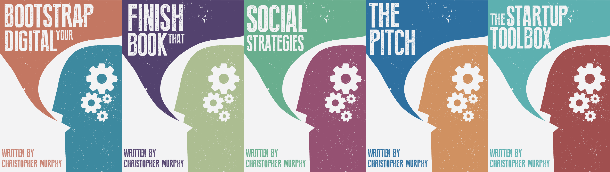
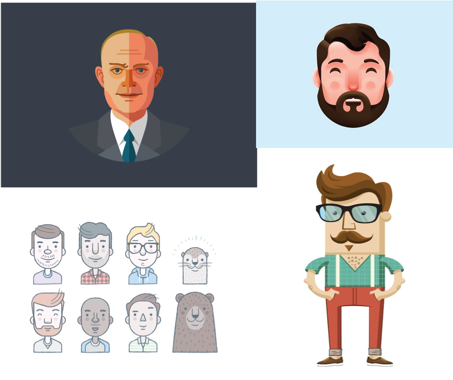

“If young designers are exposed to social issues and are equipped with the tools to tackle those issues, then great things can happen.”
– Denise Spiessens
Exploring Identity
Exploring identity is a module that will help me develop myself as a brand through the use of iconography, branding along with visual identity. The module will help me understand how design can help investigate characteristics and personality traits which can be seen or shown throughout design, and then be transformed into graphical representations.
The Monogram
Monogram
During the first week we looked at monograms. Monograms first started to appear on coins in and around 350BC, some examples have been found on Greek coins by historians of the years. Monograms are motifs that are created by either the combination or overlapping of multiple letters in order to form a symbol as a result. A lot of the time monograms are created using initials and are subsequently used for branding. A few examples of companies that have used a monogram as a form of branding are the fashion designers Louis Vuitton and Fendi, as well as the information technology company IBM which use their initials in order to create simplistic and recognizable logos.
The idea of personal identity was explored during today’s class. We began by looking at personality tests and enneagrams which helped me find out a bit more about myself. I was quite intrigued if they actually worked or not, or if it was just like the horoscopes on the back of magazines that have been generalised apply to anyone. Truth behind horoscopes video During class we completed a personality test to which the results really intrigued me. I achieved a score of 50, which represented that I was quite outgoing and sociable character. It was interesting to me that the majority of the class achieved a similar score which made me think that possibly designers may have similar personality traits.
We were given tips on how to go about developing our visual identity. These included our names, initials and personality type. All of these aspects can have an effect of the visual identity that is created. By starting of with a name a great deal can be suggested and discovered. A name will give us clues as to the gender of the person, their family background, their nationality and perhaps even their ethnicity. It really makes me curious to think that there are probably hundreds or thousands of people all over the world, with different stories, careers and backgrounds that share the same name as me, even though here my name is quite unusual. I have acquired a book that is called “The Secret Language of Birthdays”. It is an absolutely fascinating book that reveals a lot about a person purely from the day that they were born, including things such as their; strengths, weaknesses, personality traits and advice to live by.
After learning a but about monograms and visual identity we had to go off and start drawing and sketching our own monograms using our own initials, in my case IH. When I first started I found it quite difficult because I and H are quite straight characters so there wasn’t much to really play around with. However, I started to create variations using interesting looks. I also noticed that if I switched the I and the H, the word Hi is formed which is a generic word known global for Hello, which I thought would be quite cool to play with.
Monogram Progress
From week one we were given the task to fill a sketchbook with numerous hand-drawn versions of our initials. From the range of monograms that we created, a favourite had to be selected out of the bunch and put up in front of the class. We then explained each of our monograms and why we had created it, also how it represented us.We then gave critique that we could use to help us develop our monogram.
From my list I chose a simplistic and bold design, with a uppercase H and lowercase I within the H. Lucky for me my initials, when switched form the word ‘hi’ which is a generic greeting known world wide. I also chose another design that I had sketched, which was extravagant old-fashioned circus style font of I an H directly placed on top of each other to create a window shape. I am not fussed on the font I actually used to create the monogram, but I do like the idea of the window.
I developed my two concepts on illustrator, I thought my initial design of the uppercase H and lowercase I looked too boring and didn’t really represent me. I continued the window idea, first overlaying uppercase I and H and then changing the opacity to 50% so you could see the two letters, I did like the design however I thought it lacked personality.
I developed my two concepts on illustrator, I thought my initial design of the uppercase H and lowercase I looked too boring and didn’t really represent me. I continued the window idea, first overlaying uppercase I and H and then changing the opacity to 50% so you could see the two letters, I did like the design however I thought it lacked personality.
Further Progress
I had three favourite concepts after deliberating my designs, I came up with three I thought were strong, represented myself well and were flexible, that I could personalise over time or for different projects. One of my monogram concepts was inspired by the window shape idea, so I came up with monogram that fitted into the hexagonal shape but still had the window symbol within it. The monogram is symmetrical, which I think is appropriate because you can make out my initials when it is rotated. The other monogram concept that I created which is much like the window idea but it is easier to make out the letters I and H but the first one I prefer as it is more symbolic and flexible.
The third monogram concept is with a triangular shape which contains the I and H within it, it is flexible as I was able to make a mobile out of it, so it would match well with my personal page, but I don’t know if it would be bold enough, also it wouldn’t look as good as the first monogram if it was made into an icon.
In conclusion the window influenced monogram would be my favourite, the reason for this is purely down to its flexibility and clarity, as I can create variations of the monogram, such during notable events and holidays. The monogram also looks clear if it has been used as an icon as it is simplistic and not overly detailed.

Wordmark
For my word mark, I began sketching various ideas, such as my signature and different shapes that held my name within it. I noticed that I had used clouds within a lot of my work so I could in some way incorporate my name and a cloud to create a quirky little design.
The wordmark can be simplified down into four shapes, much like the HP logo with the slanted lines, as it is well know and people know the brand just by the angle of the lines. This means that if I was to use this as a favicon it would still be visable.
Uncommon Knowledge
During the first week of the branding project we were given a basic brief; entailing of Christopher Murphy’s new idea of a business, which is teaching lessons and writing a series of books, and we had to create the brand. Uncommon Knowledge was the name of the brand we had to design for, we were given the task to figure out what Chris actually wanted for this Company, such as; did he want a wordmark, monogram, icon… We were set into groups of three, our group was called ‘group eclipse’. We set to doing a basic brainstorm on the name of the company and the book names, which tailed onto simple sketches of ideas. The first thing that came to my head was a character of Chris, since is was about him teaching people, he needed to grab peoples attention. We were told that we had a 15 minute discussion with Chris to get more in depth and information on what he wanted for the following week, so as a group we decided to great basic concepts and book covers for this, so Chris could give us some feedback.
Chris had told us that he wanted pattern and bright vibrant colours for his brand, he also went through a few flat form designs that caught my eye, as that is what I am quite interested in. I thought pattern was a tad old fashioned for his target age group, which was; young adults, people who just graduated from university. I also thought pattern had a bit too much of a textbook look to it. Flat form design on the other hand, was a definite road I was going to follow, as I think many people around the target age like that style, including myself. So I went straight to Pinterest to get some inspiration.
Top web searches for uncommon knowledge
- Psychology and hypnosis trainging - http://www.uncommon-knowledge.co.uk and http://www.unk.com
- A Web series in which political leaders, scholars, journalists, and today's big thinkers share their views with the world - http://www.hoover.org/publications/uncommon-knowledge
- A Company that helps develop marketing programs with clients -http://www.uncommon-knowledge.net/what-we-do/
Companies like Uncommon Knowledge
Paul Jarvis
- - Paul Jarvis - http://pjrvs.com - http://thecreativeclass.io
Paul Jarvis is a successful web designer, best-selling author and a man with a reputation. He has worked for many large companies such as, Microsoft, Yahoo and Mercedes-benz. Paul Jarvis holds creative classes for budding freelancers, teaching them the practical skills of running a soul-traded business using his 16+ years experience of freelancing involvement.
Web design and Icons
The simplistic style Paul Jarvis has used on his creative class website to sell his courses to the public, is easy on the eye and professional. He has used a light blue throughout the website, which displays a professional and clear outlook. His icons used on the page have a flat form design, using just the colours navy, white and blue. They are easy to understand and detailed, but not that detailed that they would look messy and not be consistent with the page.
Lighthouse Labs
- - https://www.lighthouselabs.ca/program?gclid=CjwKEAiA9qCnBRCb7ZDhvaHSyicSJABGFFHtDmrM9vsFyBK7NJ4u_ebE_pIn6WnyGnuxkRIES-tZ4BoCm6Hw_wcB
My Initial book cover ideas to put across why flat design is better than pattern:
During the second week as a group we had decided to create a small keynote presentation for the meeting with Chris. The Keynote contained flat form design images that I had came across such as characters and icons which I thought looked quite quirky and contemporary, also some icons that I found on dribble. During the meeting, Chris really loved the flat form design idea as we had explained we chose it over pattern as it was more current and would attract the target market, we had simple book cover designs to prove that flat was the style to go for, which he agreed completely to. I also presented Chris some logo and book cover concepts that I had sketched.
During this week everyone had to stop working in groups, but since our group got along and had good ideas, we stayed as a group. I created a flat from design character of Chris, using block colour and not overly detailed features. From my initial ideas and sketches I used the idea of beard growth to show progression throughout the books, so I created various versions of the character with different beards, I thought that we could make it quite humorous as Chris would be, so we could have different glasses, beards and expressions. Also one of the things that Chris thought would be good to work with would be his swearing, as he would swear quite frequently. But I was unsure about this as it might put off people before they even read the content within the book and understand his personality, so quite literally judging a book by its cover. So I thought you could have a swear word on the spine of the books, so once you had collected the whole series, it would make out a blurted out swear word, so once you understood his personality you would then comprehend his vocabulary.
During this week we had another meeting with Chris, we had decided to do this meeting as group, we created another keynote presentation to show Chris what we had created, I presented him my flat design version of him that he had liked, but he was unsure about the eyes, because there were none. I completely understood why he didn’t like that you couldn’t see the characters eyes, as the eyes show personality and are a window to a persons soul. He also was didn’t like the glasses shape as they were too hipster, so he told me to look at his glasses, they were same glasses the famous chef Heston Blumenthal wore. He also said to look at other glasses shapes such as circular glasses. He also said to bring in his tweed jacket, as he always wears it during important conferences and presentations, as it is his iconic look.
I completely changed the character of Chris, as I thought it lacked personality. I searched dribble and Pinterest. Using illustrator I created the character, when creating his face I used a slight gradient, making sure it wasn’t overly noticeable but enough that it would give depth to the face but not making it look too realistic. I created his exact glasses instead of the typical hipster style glasses; I also created other variations of glasses. I created various beard styles as well. I went back through my sketches and found an idea that I had for a wordmark that I quite liked so I created it also, It consisted of a light bulb / flipped question mark that replaced the ‘C’ and ‘O’ or ‘Uncommon Knowledge’. In the end I didn't use the question mark logo and opted for a more simplistic logo, two which are situated within a circle and one that is held within two rectangles.
I decided to use the font ‘Steelfish’ for the text that would be used for the brand, as Chris said he wanted a plain sans serif font that would look modern and contemporary, also it wouldn’t look messy or overpower against the character.